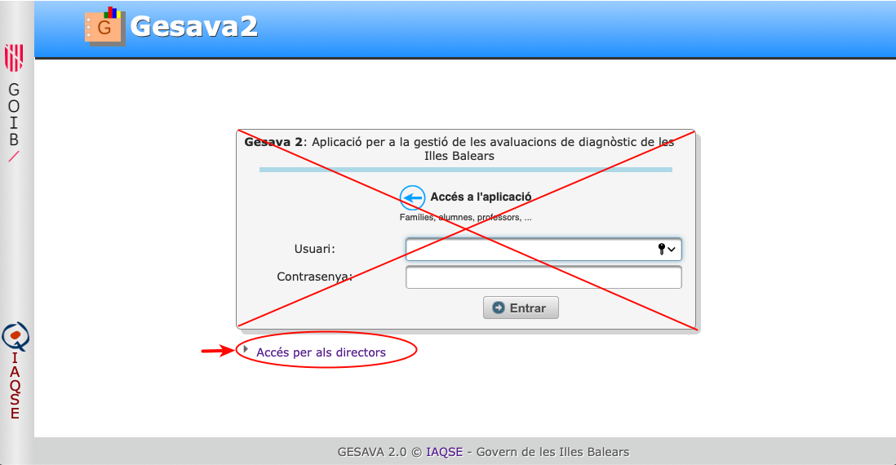
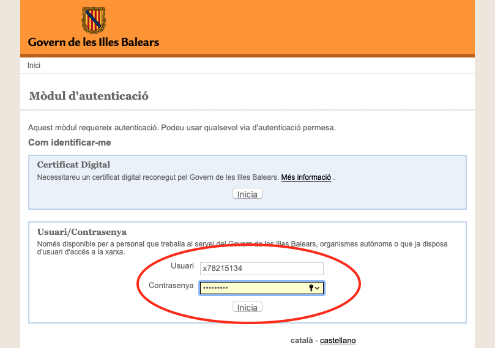
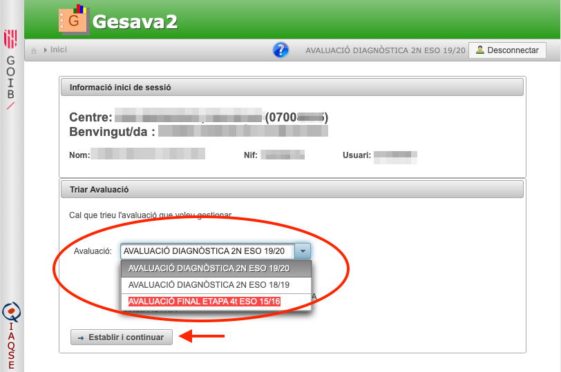
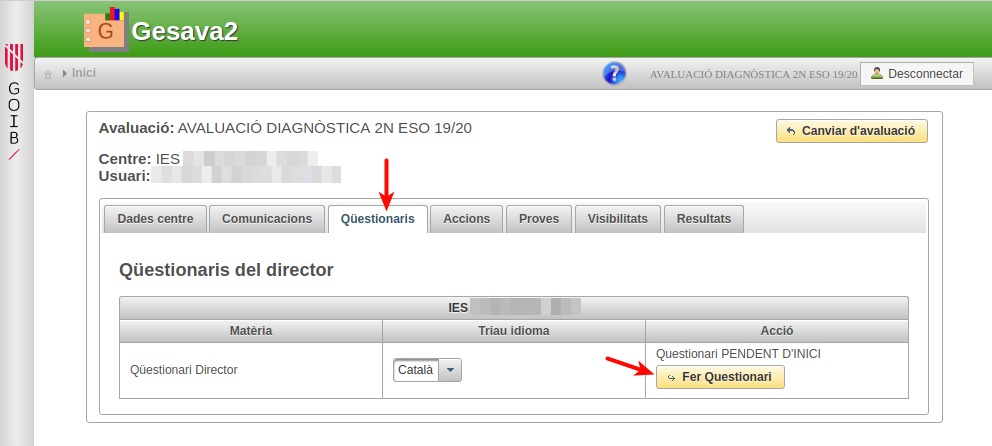
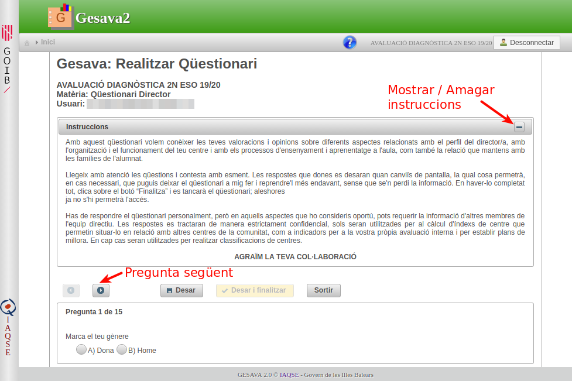
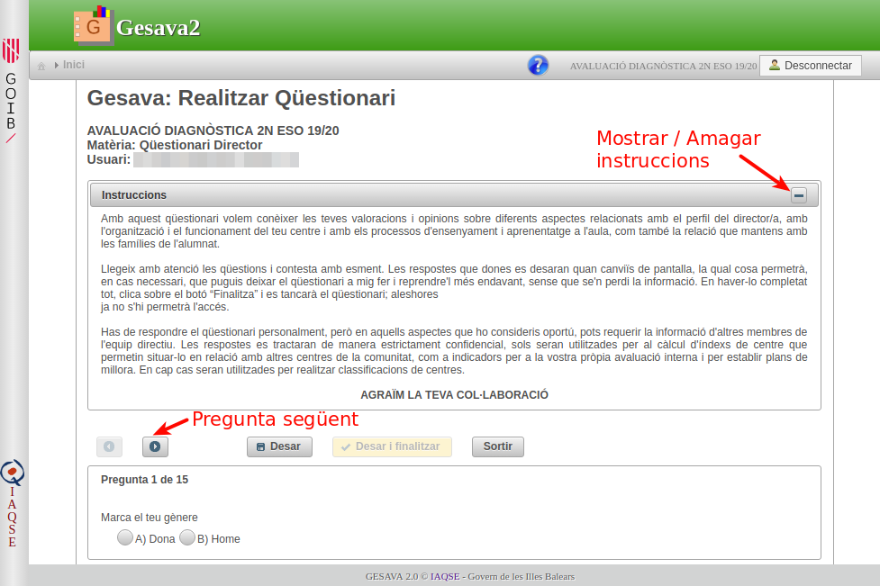
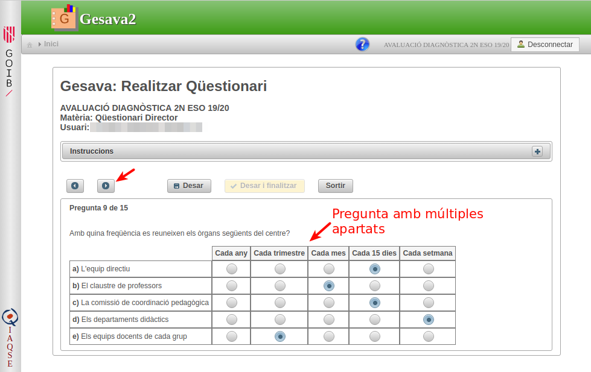
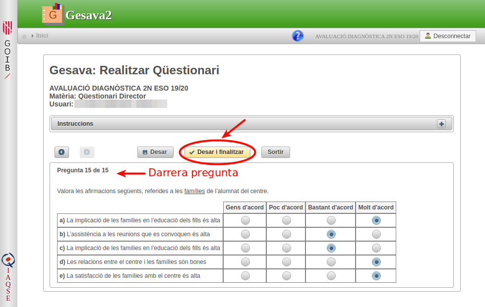
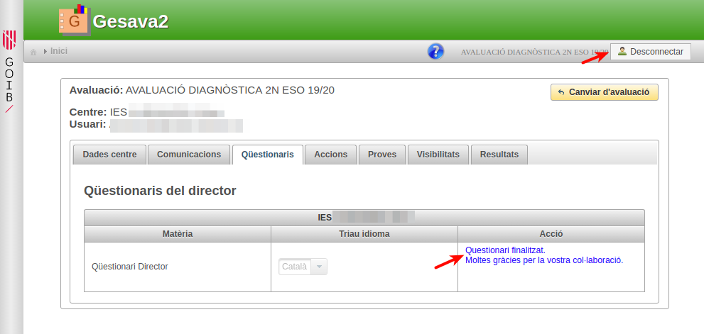
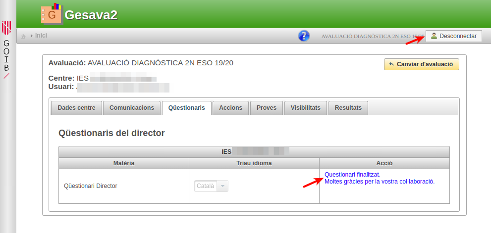

Gesava2 Directors
Gesava2 - Directors
Índex de continguts
- Accés a l'aplicació
- Actualitzar les dades del centre
- Apartat de comunicacions
- Realitzar el qüestionari de director
- Apartat d'accions
- Descarregar instruments d'avaluació
- Canviar la visibilitat dels resultats
- Seguiment i resultats preliminars
5.1 Crear usuaris de professor de centre
5.2 Gestionar alumnes NESE
5.3 Usuari aplicador de centre
1. Accés a l'aplicació
Per accedir a l'aplicació seguiu les següents passes:
-
Cliqueu sobre la imatge "Accés GESAVA"
 de la part superior dreta d'aquesta pantalla.
de la part superior dreta d'aquesta pantalla. Us apareixerà la pàgina d'accés a l'aplicació en la qual heu clicar sobre l'enllaç "Accés per als directors". Si encara no estau validats com usuari CAIB, us apareixerà una nova pantalla on heu d'introduir el vostre usuari i contrasenya CAIB (per exemple x78215134). Aneu en compte d'escriure exactament els camps, respectant majúscules minúscules i sense deixar espais en blanc.
En primer lloc, haureu de triar l'avaluació que voleu gestionar del menú desplegable. Les avaluacions amb fons vermell no estan actives i només podreu realitzar accions de consulta. Per triar i accedir a l'avaluació pitjau sobre el botó "Establir i continuar"

2. Actualitzar les dades del centre
Seguint les passes de l'apartat anterior hauríeu d'estar en la pàgina de gestió de l'avaluació. Les diferents funcionalitats les trobareu organitzades un menú de pestanyes.
La primera pestanya us permetrà actualitzar les dades del centre. Sobretot és important que comproveu que el correu que figura sigui actiu i revisat amb freqüència pel personal del centre. En cas contrari, el podeu editar o afegir-ne d'altres.
3. Apartat de comunicacions
A partir del mateix dia de la prova, amb l'usuari de director, es podran descarregar les guies de correcció de les preguntes obertes de cada competència clicant sobre la pestanya "Comunicacions".
4. Realitzar el qüestionari de director
Per realitzar el qüestionari de director heu de:
Seguir les instruccions de l'apartat 1. i accedir a la pantalla de gestió de l'avaluació en curs.
En el menú de pestanyes seleccionar "Qüestionaris" i, tot seguit, clicar sobre el botó "Fer qüestionari"
A la següent pantalla s'obrirà la primera pregunta del qüestionari. A la part superior trobareu les instruccions que podreu amagar/desplegar mitjançant el botó
 /
/
 
Fixeu-vos que hi ha preguntes que contenen diferents apartats. En tal cas, heu de contestar cadascun d'ells.
Quan hagueu contestat la darrera pregunta és important que pitgeu "Desar i Finalitzar". Si pitjau el botó "Sortir" sense haver desat abans es perdran les respostes de la darrera pregunta.
-
Us apareixerà un diàleg de confirmació. Cliqueu sobre el botó "Finalitza" i tot seguit tornareu a la pàgina inicial on podreu llegir el missatge "Qüestionari Finalitzat. Moltes gràcies".
 
 - Si no heu de realitzar cap acció més, recordeu a pitjar sobre el botó
 .
.
5. Apartat d'accions
5.1 Crear usuaris de professor de centre
Per donar d'alta tot el professorat que ha de contestar el qüestionari i generar els seus codis d'usuari (PROF-...) clicau sobre la pestanya "Accions" i tot seguit sobre el botó "Crear Professors".
En primer lloc, el director ha de seleccionar del menú desplegable el nombre de professors necessaris del centre (EP, ESO i batxillerat) i després clicar sobre el botó "Crear Professors".
Apareixerà el llistat del professorat donat d'alta. Podreu imprimir el llistat per donar un usuari i la clau corresponent a cada professor participant si feis servir el botó "Llistat continu PDF".
En cas necessari, hi ha l'opció d'afegir més professors, tornant a triar el nombre de professors a afegir del desplegable i pitjant el botó "Crear Professors".
Més endavant, també podreu fer el seguiment de quins qüestionaris s'han contestat (S) i quins no (N) consultant la columna de seguiment QPROF*.
Observació:
Si heu donat d'alta professorat de més, us haureu de posar en contacte amb l'IAQSE perquè els donem de baixa de l'aplicació.
5.2 Gestionar alumnes NESE
Heu d'entrar al GESAVA2 amb la sessió de director, triar l'avaluació i clicar sobre la pestanya "Accions" i, finalment, pitjar el botó "Gestió alumnes computen".

Si teniu alumnes amb NESE, sortirà un llistat amb aquest alumnat per grups, amb el qual podreu fer el següent:
- Comprovar que el llistat d'alumnes és correcte. Si detectau qualsevol incidència, ho heu de comunicar a l'IAQSE per tal de resoldre-la. Aquesta llista s'obté directament del GESTIB, per tant, si un alumne no figura correctament allà tampoc ho farà al GESAVA2.
- Per a cada alumne, desmarcau les caselles de les matèries en què NO ha de computar.
- Si voleu desar i continuar més endavant cliclau el botó "Desa".
5.3 Usuari aplicador de centre
Recordam que l'usuari aplicador de centre (codi APLI-...) el pot obtenir el director des de la seva sessió anant a la pestanya "Accions" i clicant sobre l'apartat desplegable "Dades de l'aplicador de centre"
6. Descarregar instruments d'avaluació
Els fulls d'incidències i els fulls de resposta s'obtenen des de la sessió de l'aplicador del centre. Vegeu l'apartat GESAVA2 - Aplicador per a més informació.
Dos dies abans de cada prova, el director accedirà, amb el seu usuari CAIB, a l'aplicació GESAVA2 per descarregar:
- els distints models de prova en format HTML per poder copiar-los als ordinadors dels alumnes o a una carpeta compartida,
- l'àudio en format MP3, que s'ha de reproduir en realitzar les proves de competència en comunicació lingüística.
Una vegada el director ha triat l'avaluació, pitjarà sobre "Proves" del menú de pestanyes principal. Si estan disponibles, li apareixeran els enllaços per poder descarregar-se en fitxer zip de cada competència. Si algun fitxer encara no està preparat per ésser descarregat apareixerà el missatge "Fitxer no disponible".
En cas de no disposar d'ordinadors o tauletes suficients, amb sol·licitud prèvia a l'IAQSE, es podrà realitzar la prova en paper imprimint els models de prova en format PDF. En aquest cas, s'haurà d'anotar prèviament el nom de l'alumne en el model de prova que li correspongui -apareix al llistat d'alumnes i seguiment- i no serà necessari utilitzar full de respostes perquè l'alumne contestarà les preguntes directament en el model de prova imprès.
7. Canviar la visibilitat dels resultats
Per defecte, l'aplicació no permet veure els resultats als alumnes ni famílies. Si es vol canviar aquest comportament, cal que el director modifiqui els permisos d'accés.
Seleccioneu la pestanya "visibilitats". Del menú desplegable podeu triar quin col·lectius voleu que puguin tenir accés a la puntuació de les proves diagnòstiques.
8. Seguiment i resultats preliminars
El director tindrà accés als resultats de l'avaluació de diagnòstic del seu centre. Aquesta és una informació dinàmica que es va calculant a mesura que s'introdueixen dades al GESAVA2. També cal tenir present que són dades provisionals, és a dir, sense aplicar-hi un processat estadístic complet. Amb aquest sentit, caldrà esperar que els tècnics de l'IAQSE posin a la disposició dels centres els informes de resultats definitius.
Per accedir als resultats preliminars cal clicar sobre la pestanya "Resultats"
Es mostren dues taules, una per a matèries avaluables i l'altra per a qüestionaris (més avall en la pàgina). Els grups que no estan TANCATS apareixen en fons vermell i, per tant els seus resultats són susceptibles d'anar canviant a mesura que s'introdueixin noves dades. Per a cada matèria i grup, es mostra el % de participació (com nombre d'exàmens realitzats), el total d'alumnes del grup, la mitjana de puntuació del grup i la seva desviació típica. La fila de totals, acumula els resultats de cada matèria.
En la taula de resultats de qüestionaris, únicament es mostra el percentatge de participació (Completats) sobre el total.

Recordam que en la sessió de director, es pot fer un seguiment més exhaustiu dels Qüestionaris de Professor, anant a la pestanya Accions, i clicar sobre el botó Crear Professors. D'aquesta forma es pot saber si un usuari PROF-··· en concret ha completat o no el qüestionari. A les seves respostes, naturalment, no s'hi podrà accedir.